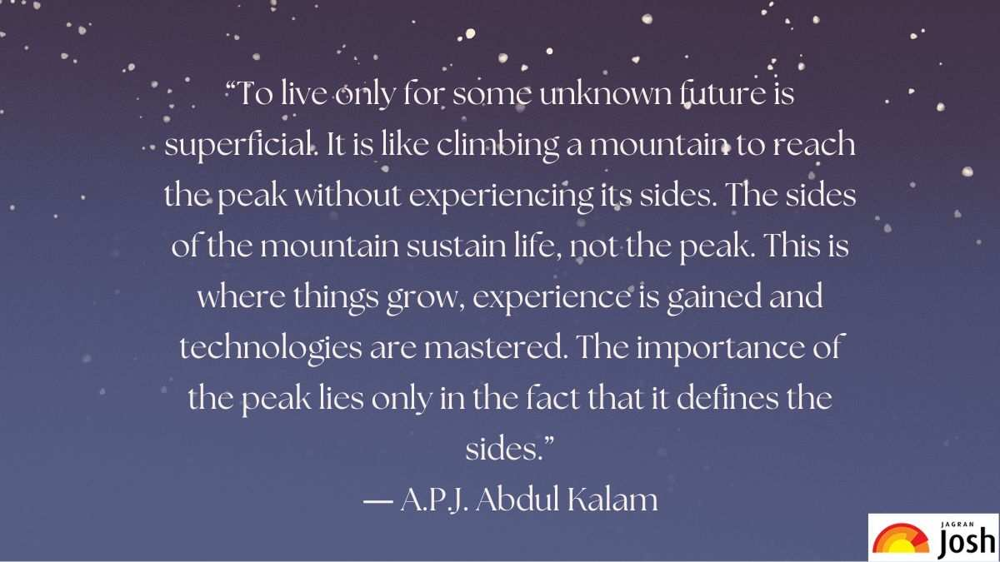
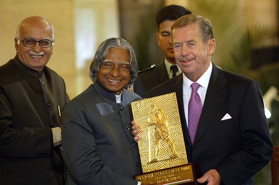

Dr. APJ Abdul Kalam (Avul Pakir Jainulabdeen Abdul Kalam) was born on 15th October 1931 in the temple town of Rameswaram, located in Tamil Nadu. He was born to a very poor Tamil Muslim family. His father was a boatman, and an imam in a local mosque, and his mother was a housewife. Due to poverty, Dr. Abdul Kalam had to sell newspapers in his early childhood to run his family, but he was a hardworking and sharp student. He started his schooling from Schwartz Higher School in Ramanathapuram. He then moved on to complete his graduation in physics from the University of Madras and after that to study aerospace technology from the Madras Institute of Technology. Dr. Kalam started his career as a scientist from the Aeronautical Development Establishment of DRDO and worked under the eminent scientist Vikram Sarabhai. He started his contribution as a scientist in 1969 when he was the project director of India’s first satellite Launch Vehicle (SLV-III) was used to launch the satellite Rohini in 1980 and is considered the developer of the Polar Satellite Launch Vehicle. He also played a crucial role in the development of Agni and Prithvi missiles. Dr. Kalam was the Chief Scientific Adviser to the Prime Minister in 1992 when the Pokhran-II nuclear tests were conducted. In 2002, Dr. Kalam was elected as the 11th President of India. He had received the title of ‘People’s President.’ During his tenure as President, he had rejected the mercy plea of the Dhananjoy Chatterjee, convicted of brutal rape and murder. He was only the third President to be awarded the Bharat Ratna. He also imposed President’s rule in Bihar in 2005. However, he did not file for Presidency for a second term and instead returned to the field of academics and continued to do so till his death in 2015.
“Determination is the power that sees us through all our frustration and obstacles. ... “Failure will never overtake me if my determination to succeed is strong enough.” “Be Active! ... “The best brains of the nation may be found on the last benches of the classroom.” “Dream, Dream, Dream. Dreams transform into thoughts and thoughts result in action.”
"If you fail, never give up because F.A.I.L. means "First Attempt In Learning". End is not the end, if fact E.N.D. means "Effort Never Dies." If you get No as an answer, remember N.O. means "Next Opportunity", So let's be positive."

He was the writer of various motivational books like "India 2010", "Touched off Minds", "Mission India", "The Luminous Sparks", "Wings of Fire", and "Moving Thoughts". His life, work, and convictions are loaded up with models and motivations. He will keep on inspiring us for eternity. Furthermore, this is the genuine justification for why individuals from every one of the segments of the general public precipitously show love for this incredible person on his miserable end at IIM Shillong on 27th July 2015. May this Noble and faithful Soul find happiness in the hereafter!
* Let us now study some interesting facts about Dr. A P J Abdul Kalam: * His full name was Avul Pakir Jainulabdeen Abdul Kalam. * He was born in a Tamil Muslim Family. * Kalam was a vegeterian. In his words “I was forced to become a vegetarian due to financial constraints, but I eventually came to enjoy it.” Today, I am a complete vegetarian” * He was India’s ‘first bachelor President. * He was very popular among children. * Kalam’s autobiography ‘Wings of Fire was initially published in English Language but then later published in 13 other languages. Although the life of Abdul Kalam was filled with struggles and hardships, he rose above the adversaries to become one of the greatest scientists of modern India. His role in nation-building will be remembered till posterity.